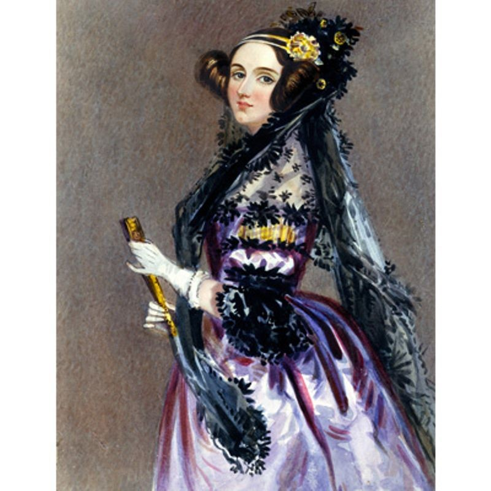

Early Computer Science, and the role of women in the development of computers
.accordion-flush class. This is the first item's accordion body.

Here is the famous photo of Margaret Hamilton, who actually led the Software team that landed the Astronauts on the moon. Here she is depicted with her thousands of lines of code that ran calculations for the trajectory of the craft. It was even able to recognize faults made by the Astronauts and correct for them accordingly. Her work laid the foundation for the Software Engineering profession and helped grow the need for computers
There is now the advent of a new and exciting technology referred to as video games. Here is a quick example with pong. Credits to straker on Github
You can control the left paddle with "s" and "w" and the right paddle with the up and down arrow keys
The Early Adoption of gaming as a family console, and the downfall of the gaming industry
With the rising interest in home arcade systems, families became interested in bringing the experience home. Atari begun making consoles for the home such as the Atari 2600

With consoles being marketed for the family, games were meant as a family activity or played by children.
Games during the time were lack-luster and were rushed quite often
The coding for the games was often rushed and many games being released were quite bad, with the final nail in the coffin being ET the video game
The video game crash marked an end of the era of home console gaming for the family
In order to capitalize on the idea of video games as a form of home media a new change was needed.
Marketing games towards young males
With the introduction of the Nintendo Entertainment System and the return of video games, the marketing department had to focus on a target audience
That audience was to be young boys, where a lot of the marketing and advertising for these games followed many of the ideas of hegemonic masculinity
These advertisements objectified women, and marketed games for boys, using the stereoptypes of it's time
There needed to be an end to the wild west era of gaming from the 70's and early 80's so by putting video game consoles in the boys section of stores and focusing advertising on one demographic, consoles could become more profitable.
Publishers traveled to cities, held tournaments and got to see firsthand who was playing their games. "That was probably the first age of game demographic enlightenment," says Mika. The numbers were in: More boys were playing video games than girls. Video games were about to be reinvented.
These types of marketing stunts for games like Contra and some racing games perpetuated the ideas of hegemonic masculinity and begun picturing women as objects and put these ideas into children at a young age.
Troy Deskins of Eastern Michigan University finds
"In their research, Fox and Tang (2014) investigated what personality traits, and demographic variables with level of video game play, would predict sexist attitudes toward women who play video games. Participants were recruited through online forums, blogs, and social media sites to participate in an online survey that measured lifetime video game play, conformity to masculine norms, empathy, sexism and social dominance orientation"
This was also the advent of video game media, with magazines and comic books showcasing game characters becoming more prominent
In a study regarding sexism in video games, Frontiers in Psychology notes "In video game magazines, over 80% of female characters are portrayed according to three types: sexualized, scantily clad, or vision of beauty, and over a quarter fit in all three categories"
Even in more family titles like Mario, the women in the games is always the damsel in distress and in many arcade titles, there is are oversexualized women, which influences young males who may spend many hours playing video games. However the injection model does come into scrutiny. Although boys may be the target audience, they aren't passive in viewing these titles.
As seen in nintendo power, there is this overall stereotypical masculinity when talking about Mario, whilst Princess Peach appears to be a damsel in distress whose purpose it merely to be saved
Troy Deskins notes in his study on sexism in games, "hostile sexism correlates with less offensiveness and more with amusement. It was also shown that people high in benevolent sexism were more offended and less amused at the messages."
The evolution of the internet and the hostile online gaming atmosphere
The 90's and the evolution of gaming into a 3d world
At this point, video games evolve and characters are now more than just pixels and feature voice acting and even 3D models. However this hyper realism and it's effects was something to be noted at the time.
One thing to note was the impressionability of younger children, which led to a fear of video games and a later adoption of the ESRB rating.
A 1998 journal found from viewing video games at the time " the video games that are being played by today’s youth present an overwhelmingly traditional and negative portrayal of women and that the development of gender identities and expectations among youngsters may be affected by these portrayals. For example , girls may expect that they will continue to be victims and needy and that their responsibilities include maintaining beauty and sexual appeal while boys may determine that their role is to protect and defend women and to possessive them even through the use of violence"
During this time, violence and sex became more realistic, with video game depicitons of women not improving from the last decade
Game Icons and Heroes and their Portrayals
Games started to move away from nameless heroes and begain generating icons and heroes to look towards, similar to the comic book industry. This followed the examples of Dirty Harry or other vigilante examples where the player must resolve conflicts using whatever means necessary. There was also a sexist portrayal of the characters being shown. Dipicted above is the character Lara Croft from the game series Tomb Raider. Throughout the series of games she is hypersexualized whilst male characters of the time like Duke Nukem and Doom Guy depict Hegemonic Masculinity
With the growing of online video games like World of Warcraft, Starcraft, Call of Duty and other titles, was a rise in harassment and bullying. In many of these online lobbies it was common to find misogony, racism, homophobia among other things. In it's growth it became almost expected to receive negative backlash whilst playing.
With fears of the influence of gaming on children, the ESRB rating system was introduced due to an unlicensed "Sex Mod" called hot coffee for the game Grand Theft Auto San Andreas, which enabled a previously unreleased sex feature in the game
Retaliations against this system and the rise of a new era
Similar to the Grannie Pants example, there have been retaliations in recent times against the toxic masculinity displayed in the gaming Industry. Gamer gate was an example that led to a change in the dynamic of how characters in games are portrayed and the roles of women in video games.
Started by Zoe Quinn, #gamergate was meant to address the various notions of the video gaming space as a male only space, and the common ideas that games are made for males. At the time there was hypersexualization of female characters. Some examples in modern games included many of the characters from the game League of Legends.
Here is a quick video on some of the tactics women have used similar to Grannie Pants to fight online harassment. ** Viewer Discretion is Advised!
The idea that players are anonymous and can say what they want is not an "old glass in a new bottle" idea, but teaches new generations that being sexist and harassing players is a "normal" part of play, and players may assume their actions have no consequences. However in some cases we can see this violent behaviour going to far and translating to other medias
Swatting and DOXING of Individuals
In a recent times a new prank referred to as swatting has grown more popular. The prank involves viewers of a person livestreaming a game finding the location of the individual and calling in a fake police threat for a serious crime. The police will then respond by sending a swat team to the streamers house, often damaging goods and scaring the individual. Viewers of online live-streams (a new form of media where individuals will film themselves playing games or interacting with viewers live) have been known to find the locations of female streamers in order to harass or bully them and even send over these dangerous swat teams to their houses.
Gaming news Media "Polygon" notes a case of a female live-streamer who received constant targeted harassment after viewers were able to find her location
Incidents like this aren't uncommon, with many news outlets reporting on incidents similar to this
Legal Action being Taken
With constant evidence of sexism and blatant misogyny in video games, many of the root causes as in the early stages of video games lies in the corporations. Major companies like Blizzard and Riot Games have been facing recent lawsuits regarding sexual harassment and an overall toxic work environment centered around hegemonic masculinity. Many of the characters featured in these game studio games follow the ideas of hegemonic masculinity such as Darius, Garen, and for the female end Sona and Lux as shown below
Many of the male characters in these games are hyper masculine and use violence to act on their own will. Many of the women characters in the game are put into healer and supportive roles, where there role is more of a bystander. Typically these kinds of characters are hypersexualized, and could lead to younger gamers, being exposed to hegemonic masculinity.
With many of these companies and their practices being rooted in sexism, many women have begun to speak our regarding harassment
The guardian states in a story regarding sexism in gaming "Over the last two years, in a protracted and devastating #MeToo movement for the video games industry, hundreds of women have spoken out about the manipulative and predatory behaviour they have experienced in their video game careers. A 2018 investigation by games website Kotaku led to legal action at California developer Riot Games, where five former employees sued the company over workplace harassment and discrimination and hundreds more joined walkouts to protest"
With the initial marketing of video games towards a male audience and the objectification of women in games throughout the years, there has been a systemic issue at hand, with many of these issues with companies only being brought to the forefront in recent years.
Conclusion
In the course, we looked into how video games like Grand Theft Auto may affect a youths perception on the police, however predatory behaviours, misogyny, sexism and hate speech are now all too present in gaming
The #GamerGate movement, and many new lawsuits have begun to spring up due to these recent allegations. Gaming and the online space as a whole is moving towards being more inclusive, with games like Battlefield and Call of Duty allowing the player to chose female characters, and games like Life is Strange are beginning to feature